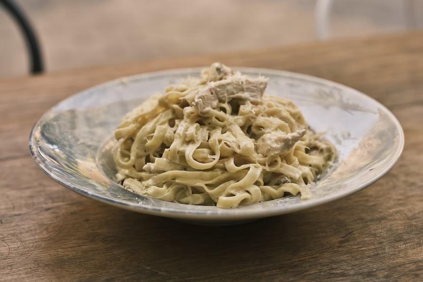

Caprese Salad

A showstopper meal and it's all done in just over 30 minutes!
INGREDIENTS
- 8 oz (225g) fettuccine pasta
- 1 tablespoon olive oil
- 1 lb (450g) boneless, skinless chicken breasts, cut into bite-sized pieces
- 2 cloves garlic, minced
- 1 cup heavy cream
- 1 cup grated Parmesan cheese
- Salt and pepper to taste
STEPS
- Sn a large pot, cook the fettuccine pasta according to package instructions. Drain and set aside.
- In the same pot, heat the olive oil over medium-high heat. Add the chicken pieces and cook until browned and cooked through, about 5-6 minutes.
- Add the minced garlic to the pot and sauté for an additional 1 minute.
- Pour in the chicken broth and bring it to a boil. Reduce the heat to medium-low and simmer for 5 minutes.
- Stir in the heavy cream and grated Parmesan cheese. Cook, stirring occasionally, until the sauce has thickened, about 3-4 minutes.
- Add the cooked fettuccine pasta to the pot and toss until well coated in the sauce. Season with salt and pepper to taste.
- Remove from heat and garnish with chopped fresh parsley, if desired.
Serve the chicken Alfredo pasta immediately and enjoy!
Back to Recipe Page